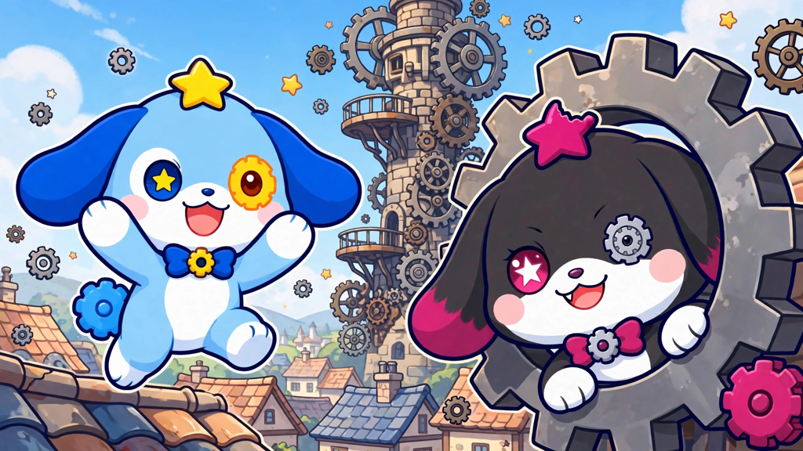
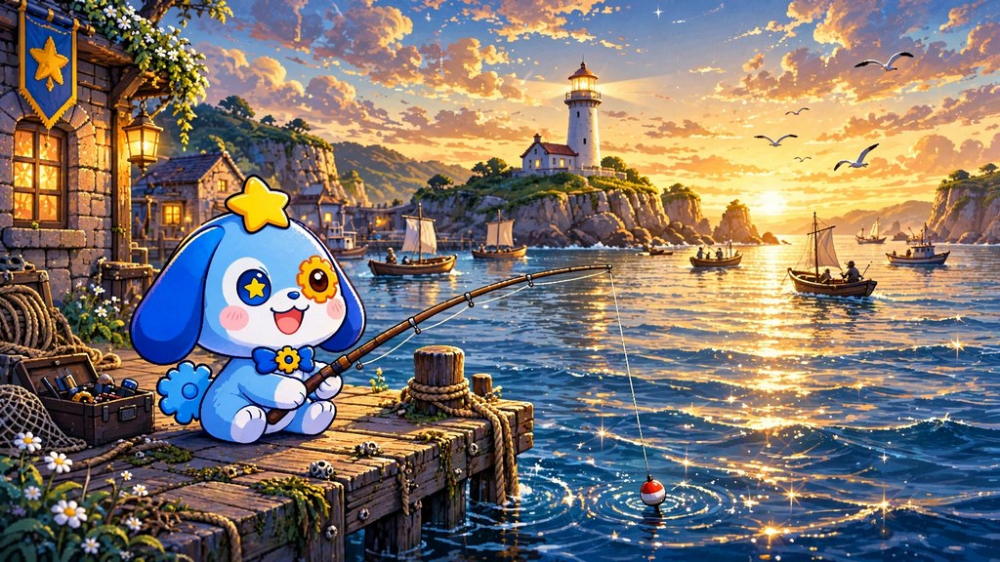

AOBEE GRAND RPG · 試作版

第1章「はぐるま村の異変」／第2章「水車小屋の対決」／第3章「まきばの集落」／第4章「暴走！ 大風車」／第5章「神殿門前町」／第6章「星の神殿と止まった時計」／第7章「港町と灯台守」
※試作版です。セーブはこの端末のブラウザに、3スロット＋デバッグ枠で保存されます。
大歯車は戻った。でも、歯が1枚欠けたまま…。わるびーは何を隠しているのか——第3章へつづく。

マーカーが金色のゾーンに入ったら「ここだ！」
キーボード： 矢印/WASD=移動 Z/Enter/Space=決定 Shift=ダッシュ